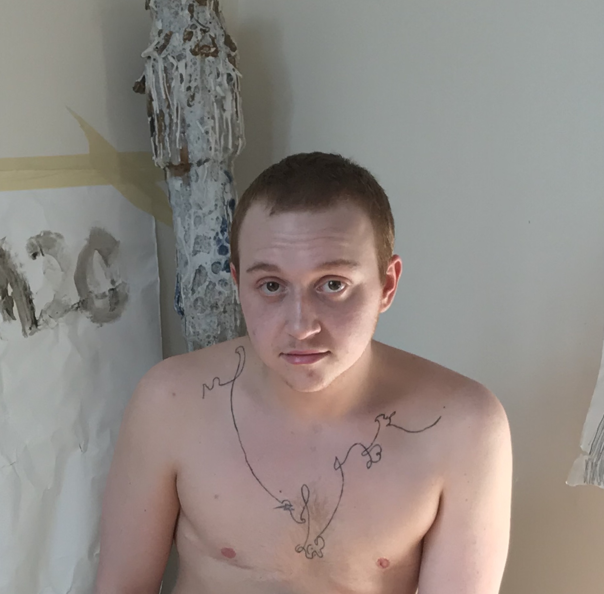

trans* - cis comparitives
download pdf
What does it mean to be cisgender? I know, and often ask, what it means to be trans*. At least I feel that I know. But to be cisgender is not what I perceive to be the “opposite” of trans*. In fact, any comparison proves challenging when one accepts the natural erasure of binary thought, expression, and perception. How could one identify the meaning of cisgender when the entire binary has been recognized, and in such recognition of fabrication becomes tarnished. To understand transness is not to forget the “cisgender”, but to acknowledge the fragility of what we as humans have fabricated. “Cisgender”, therefore, is a human abstraction, the development of the binary and binary though serving as a language of imaginary codes built to separate.
Despite the incongruence between imagined social codes and the surrounding reality, the imaginary begins to take very real effects in societal life. When “cisgender” and binary thought strongly develop in society, the imagined binary code becomes something that can hurt or benefit one another - the imagined becomes reality, with real consequences. The binary only becomes “undeniable” or “reality” when such thought is adopted societally, taking on real effects that are felt by real people. When the world around us accepts make-believe rules, such imagined parameters develop into our surroundings, hurting or helping ourselves and those around us.
In turn, if cisgender becomes the reality associated and accepted in human society (which it has), then teh need for further abstraction arises: trans*ness. The need for trans* to become a reality from the imagined is due to the developnment of the abstract, imaginary, “cis” bodily identity. Therefore, without “cisgender” make-believe, trans* would never be adopted into reality the way it has today in progressive societies. Have we come full circle? In abstracting our own abstractions, have we grown closer to our natural states of expression, unimpeded by higher powers and influences? Trans* is an abstraction of the cisgender, just as the cisgender is an abstraction of reality. Thus, trans* only exists through the basis of cisgender “reality” emerging from the imaginary.
If both cisgender and transgender imaginary realities could be recognized as mere abstractions of one another, then the realities so accepted and adopten through each can be understood as they are: imaginary/abstract/nonreality. This is not to say, however, that abstractions are not beneficial, even necessary to human function and understanding of our expression. If, instead of relying on such abstractions’ real effects, humans begin to accept such realities as manifestations of abstract thought in society, the need for such rigid social codes begins to subside. Instead, new avenues of further abstracted, further imagined and nuanced identities developing and even welcomed into society. An understanding of the differences between reality and the imagined reality is becoming increasingly necessary to surpass the rigid walls built up through our own imaginations.
ceramics and the body
download pdf
The ceramic vessel post-glaze firing is relative to the body in that it can be touched; physical processing of artwork is a unique viewing experience significant to the ceramic vessel in that it can experience the world in a visible, physical way - like people. In this way, trans* bodies in the social atmosphere of “passing” relates significantly to the ceramic vessel.
The vessel, like the body, changes with its surroundings. Unlike most visual art or sculpture that exists within the gallery space, ceramic vessels not only respond to their surrounding environments, but invite the viewers to interrupt such fields of objects to interact with such bodily forms.
The ceramic vessel’s relation to the body allows such forms to communicate to the viewer in a humanistic, material way. The gestures clay so flawlessly records relates to the viewer in bodily action, creating a glass-less mirror of reflected and articulated gesture. The history of such gesture impacted upon the clay body remain with the clay regardless of intended (and typically unsuccessful) erasure. The clay body reacts to each and every touch or force impacted upon it, much like paint on canvas. However, unlike pigment on a brush, the entire human body can come in direct, constant contact with the material. Rather than reflecting such movement, like paint, the clay becomes the movement; the same goes for clay experiencing chemical changes through multiple firings. These identification factors of body and bodily gesture within the clay are never lost in the structure of the clay body itself, and therefore the vessel. Even through the action of wedging or kneading the clay in an attempt to remove the history of such gestures, the clay never truly rids itself of the experience its body has had.
Through its entire life process, clay adapts based on its surroundings. Whether in the ground, unearthed and unused by human hands, or in the kiln, the clay holds and responds to the way it was/is handled and coaxed into creation. The rocks and earth surrounding the clay in it sbirth affect the way it fires in the kiln and holds itself as a vessel. The way the clay was thrown or handles in greenware affects the way the clay feels or possibly functions; the effects of such actions relate and are relative to the viewer’s handling. Through its fantastic ability to directly react and retain the effects of each experience, clay fired into ceramic vessels are able to function more directly to both the viewer and maker. Through direction of action, atmosphere, and construction, ceramic objects hold an incredible ability to relate to the viewer in human, bodily, tactile interaction.
trans* on line
download pdf
I have a hard time figure drawing. I feel as though representational drawing (or figurative fine art made to appear as we see it) is to try to harness the line; to make it conform. Paul Delaroche’s Daguerreotype that began the “death of painting” has given the artist little reason to attempt to accurately and decisively portray the (outside) visible world. Photography has marked a strange turning point for fine art (among other arts) - one in which that artists themselves are forced to confront their dominating touch. The mark, this “touch”, is only made through line. This line could be rubbing, smudging, splattering - the method of mark making is irrelevant. Although photography is typically accepting as “truth” or documentation in society, it, too, is false reality, manipulated rigorously through indirect human touch. Therefore, without this direct touch, painting’s ability to highlight the artist beneath its marked history becomes evident and even more important. The mark, that being said, acts as a documentation or mark, of the action of mark. If this mark is documentation, it must (and does) hold the weight of the moment in which it was birthed the artist’s body/tool.
The mark becomes not only a documentation of the moment it was birthed, but of the artist’s history. The mark transforms into the truth that photography lacks: the truth of unfiltered reality, of expression. The mark is born in the moment the artist pauses to create line, to document the gesture of mark making. The line in itself, after the new foundations of photography, can become a time marker for everything that happened to the artist up to and during its creation.
It is this notion, that the line documents not only the moments of one’s life leading up to, but also during its creation, that allows an unfiltered truth to enter the realm of fine art. (And exiting most processes of photography). The potential that line has for my trans*, queer, Jewish body is quite unique. I have always felt that the truth presented by fine art (which is essentially mark-making) could be a window out of my dysphoria - in other words, to be seen without the crushing weight of the body that wasn’t mine, but is now. I do not think this potential can go unnoticed, for when we realize the public’s views on the death of painting, it is ever more important to reclaim it in your own unfiltered truth. To do so is to accept reality and voice yourself among others doing the same - to have such a conversation that transcends all languages but art. To any painter this becomes even more important as one thinks about the way their identity can appear through such documentative marks. When reconciling with the truth that I have made before my eyes, I cannot think it is wrong. For thinking a mark is “wrong” or “bad” is to say the truth is the same. Is the truth of the line you have made upsetting you? Why? Why hate it? Why obsess over the image of a gesture? To ignore it would be to cover it up . To love it and accept it would mean to accept and highlight, even, the truth of your identity, not only as a human in this world (or your own) but as an artist speaking your own language.
This is the unadulterated expression that line can so effortlessly bring. This is why I find figurative, representational work often just confirmation of a European, white, male dominance over the techniques that are taught (and thus frequently accepted as its own inherent truth of art). I do not think it is worthwhile for myself as an artist to spend more time confirming this notion of European triumph and thinking about how to twist and manipulate my mark making. To do so would be to ignore my unique potential as an artist in my own body and world.
practicing
Performing daily always, inevitably, irresistibly, is the truth of society. This is why I love performance, and lovehate fine art; meaning drawing and painting. However, the lines are grayed between the two seemingly unrelated topics.
When I practice, daily, I become an artist.
In doing so, one is able to acknowledge a daily progression upon their making and identity. Maggi Hambling is often repeating the notes of her past mentor, “‘If you’re going to make yourself an artist, you must make your work your best friend, that you can go to whatever you’re feeling. Whatever it is go to your work.’” I strongly believe this statement speaks to how practicing regularly allows the artist to establish themselves as a maker with a technique and process separate from the “real world”. An artist to me can be defined presently as an individual who actively creates art by making marks (ephemeral, social, literal, etc.) that show us something new - the artist themselves, the only truth worth listening to, worth spending our 2019 time on.
In seeing my own work daily, and recognizing that I must work constantly and daily, as we also proceed to irresistibly perform radically in and throughout our society. Thinking constantly, performing constantly, shouldn’t we spend this perforative lifestyle and time learning and thinking on finding what we contribute and as artists developing ourselves?
I strongly devote myself to Hambling’s reminder that to be an artist making art, one needs to be able to return again and again to one’s art in order for the art to develop inside the artist. As Paul Hackett, my former mentor would say, “Push your craft”. An artist must push themselves to the limit to find what drives them, what the meaning and purpose of their influence is. In order to develop such a craft, a sense for devotion to artistic development must linger and grow, enticing the artist into the warm embrace of art.
In becoming, one performs. The performance of mark making, the creation of the documentation of gesture and this gesture meeting surface can tell a pure truth that often refuses to be erased or muted out. (Rare in this world of performative “truths” and manipulation and lies). The history and performance of one/s life stops to mark this gesture, to create the mark. Thus the mark becomes a document and holds the weight of everything within the artist’s world, life, history, and creative practice.
on experimental, “new”, abstract marks
Matisse, although widely accepted as a paedophile and a bigot, was onto an incredibly influential study of children’s artwork. The purity, innocence, and freedom expressed through such work was something often found in Matisse’s own practice. The study of expression without the burdens of “traditional” schooling or the white European hold on art in this world is eye-opening to how learning and unlearning go hand in hand in our world. To learn art is to learn techniques of other artists. In doing so the artist, through practicing, will hope to gain some knowledge from the origins of such technique. It is as much, if not more important in our present day to unlearn and question our teachings, readings, practices, to begin to understand art - and possibly more powerful, our own artistic practice.
To express something new, something worth spending our precious, short attention on, there must be some sort of original material coming from the artist in the aftermath of the presented work. Let me explain further: to find something new, expressive, and artistic, going within oneself and one’s artistic immersive world is necessary. The reason being is that humans will always fail to accurately represent anything in this world, and only slightly better something in the artist’s head. Thus, there seems to be little reason to depict our world as we see it. We as artists must therefore understand our ephemeral relationship to the page, camera, surface, material, experience, performance, etc. The performance of this creation is the artist’s undeniable truth. The full, completed (if that is really such a state that art can be) work of ard (including mark and “fine art” practices) documents each gestural mark as every documented mark or line is present in one single moment.
To express something that intrigues and holds the viewer si to create something worthwhile; new; interesting; and above all, a work of art.
This “newness” is similar to the newness one experiences as a developing child. (Coming back to Matisse’s fascination with children’s expression in art). Parallels can be drawn between the artistic practices and the experiences of learning a new world as a child. Reading, listening, watching, a new word can seem foreign to a child, potentially of another language to the untrained listener. When defined, and therefore prescribed a new meaning, the word has usage, function, and potential. Not only does the child now have power over the word, but the word has power to give to the child as a tool of language. Defined, assigned value and structure within the child’s growing vocabulary, the new word becomes a powerful tool both in itself and in its developmental impact upon the child.
This tool, this realization structure, and discovery of an exotic newness, is the experience of finding new theorems in “fine art” (i.e.: abstract developments, and profound gestures within one’s life). This is not necessarily inspiration, or the attempt to find it - which is sure to fail - but of foundation of the identity defined and shaped in the paragraphs above. Chuck Close promotes this idea stating late in his profound career, “‘Inspiration is for amateurs — the rest of us just show up and get to work. And the belief that things will grow out of the activity itself and that you will — through work — bump into other possibilities and kick open other doors that you would never have dreamt of if you were just sitting around looking for a great ‘art idea.’’” Close understands that these explorations of artist development are not equivalent in the slightest to finding inspiration. The seeing eye cannot be completely reliant, nor the mind, nor both together, can be counted on for inspiration, much less motivation, to create art. Finding the real motivation, through constant, daily practice as a fluid and working artis, is just like the child’s discovery of a new word.
Therefore, the line can express something of truth, purity, childlike innocence, but most importantly a sense of something new or shocking: an unidentified truth of gesture and existence that speaks its own language, balances its equations, and holds its own undeniable truth.
In 2019, not many things can shock the viewer in the art world, especially “fine art”, but in our case within the realms of this discussion, abstract art. The 2016 election forced America to acknowledge how little we payed attention after WWII and how badly we need to gain focus on reality. Repeating patterns of Germany’s iconic holocaust and America’s own internment camps, and systemic racism rules the foundations of both our country and capitalism. The human race, it seems, has always been in crisis, but the redefinitions of society and identity as human has caused a numbing of our country through both learning and unlearning the false “truths” America has had since its birth. To shock the viewer it to hold the viewer, to present this exotic newness. To do so today is an extreme feat for a fine artist, and indeed a painter. This is why, in creating/manipulating/highlighting truths or falsities, or simply shocking the viewer with the work’s presence, today’s art is ever more important to the hardened society.
To show someone art is to show someone an identified, unidentifiable performance of identity frozen within the framing of our viewing world. All this being said, the line has more newness, more power, more shock, more strength, more presence than any hydrogen bomb, technological creation, chemical reaction, human ready-made object, etc. etc. We cannot be numb, and to shock is to prove a truth of existence and in doing so hold the viewer. The truth of the artist’s own developed identity can perhaps affect this 2019 world for a less harmful future. The importance of this particular kind of expressive, worldly deconstruction of our physical world is becoming ever more crucial as our country among others repeats deadly history.
The deconstruction of our world by the artist forces the artist to create in this age. It is in order to escape the world, to escape my life, to escape other’s lives, that I paint, that the artist paints, that I make, that I feel is my only purpose, truth, and duty to this world.
The experimental, the abstract, the identity, the identifier, are new. They are showing the world the truth of art through the truth of the world (which comes from the pure identity build from active practice). This truth, as stated above, is proving to be rarified throughout constant bigotry and silencing of the avant-garde, the students, the educators, the real artists, the working artists, the artists who have no money, the artists who have some money, the artists who love what they do, the artist who makes, instead of the phonies and capitalist knock-offs dominating our culture. Life is not all about seeing, or receiving pleasure or taking something from somewhere. I am no purist, but some of the “purity” in this notion is relevant. The alluring, unadulterated and thus “pure” truth within the mark/gesture shows the viewer the only thing “new” the artist has to offer: themselves, and their ephemeral identity throughout their own practice.